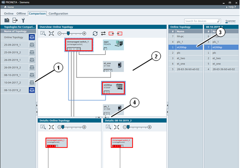
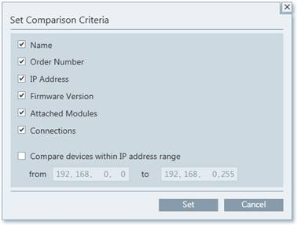
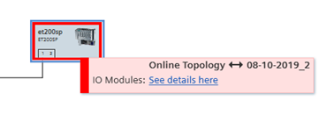
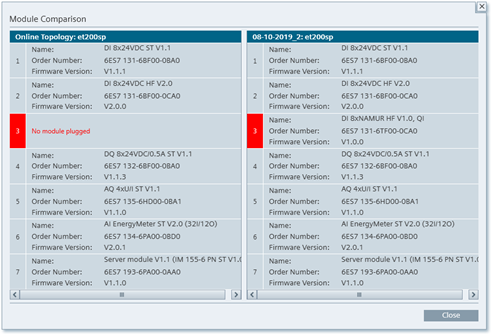

Icon
Name
Function

Add Topology File
Adds a previously stored topology to the topologies list.

Export Topologies
Performs a Topology Export to disk.
Set Comparison Criteria
Selects filter setting for the device comparison.
PRONETA Basic’s Network Analysis gives you a quick overview about which devices are installed in your PROFINET network, and how they are connected with each other. The Network Analysis also lets you view and change various network parameters of the devices, like IP addresses, device names etc.
Different networks can be compared with each other, and the devices can be configured automatically or manually.
Comparison mode serves to compare two networks with each other – usually one will be the physical network as found during the current network scans, and the other one will be a reference network. The reference network in turn can be a saved topology file of a network scan, a network as configured in a STEP 7 project, or AML data.

The main screen is separated into:
A Topologies List (1) of “Topologies for Comparison”
One major (top) and two smaller (bottom) Graphical Views (2)
Two Device Tables (3) with the devices stored in the selected topologies
A pane border (4) allows for the opening and closing of the bottom Graphical Views and for changing the relative sizes
Function Bar
The following functions are available in the Function Bar:
|
Icon |
Name |
Function |
|
|
Add Topology File |
Adds a previously stored topology to the topologies list. |
|
|
Export Topologies |
Performs a Topology Export to disk. |
|
Set Comparison Criteria |
Selects filter setting for the device comparison. |
On the far right of the Function Bar, there are the Device Search and the Scanner Status Indicator.
The comparison criteria determine which device parameters are used in establishing differences between topologies or devices, respectively. Two devices are considered “counterparts” to each other only if they have the same values for all the parameters checked in this dialog, and if they fall within the IP address range chosen, if one is defined.

In this window the current online topology and a list of stored network topologies for comparison is displayed. Add more topologies through the commands in the function bar.
To remove an entry, right-click in the list, and apply the “Remove File” command.
To compare two of the topologies from the list with each other, select both balance icons to the right of the respective topology names. The top entry of the pair will be displayed in the Graphical View and compared to the bottom entry.
The list of topologies displayed here is retained between PRONETA Basic sessions.
Graphical View
The Graphical View is a graphical display of the PROFINET network. For details on its operation, see Graphical View in the Online mode.
Display of Devices without a Counterpart
For devices with a red border, no equivalent counterpart was found in the other topology. Equivalency is determined by the parameters configured through Set Comparison Criteria.
Graphical Views “Overview” and “Details”
The larger view shows an overview of the top network chosen in the topologies list.
Below the Overview are two topology Detail Views which highlight any device selected in the overview or the Device Table; the left detail view showing the device in the first topology, the right one showing the corresponding topology configuration in the second one (if there is any).
A red border around a device symbol indicates that differences between the devices in the first and the second network exist. Hovering over such a symbol in either of the detail views brings up a tooltip with more details about the differences.

A click on “See details here” provides a more detailled summary of differences.

Differences may be the network configuration, module status etc., as configured through Set Comparison Criteria.
Tool Bar
In the top section of the view, there is a tool bar with a variety of function icons:
|
Icon |
Name |
Function |
|
|
Zoom Selection |
Lets you draw a rectangle inside the Graphical View. Once you release the mouse button, the view will zoom to display the rectangle area. |
|
|
Zoom Fit to Screen |
Zooms the view back in a way that all network devices fit inside the view. |
|
|
Zoom Bar |
Zoom into the network or back by dragging the handle to the right or the left, respectively, or clicking on “-“ or “+”. (You can also zoom into and out of the Graphical View by placing the mouse over the view and using the scroll wheel.) |
|
Refresh Comparison |
Starts a new scanner cycle of the network. (As opposed to the Online mode, in Comparison mode the Graphical View is not constantly updated.) |
|
|
|
Change Topology Displayed in Overview |
Toggles which of the two selected topologies is displayed in the overview. |
|
|
Go to Previous Difference |
Selects the previous conflict in a comparison (if there is one). |
|
|
Go to Next Difference |
Selects the subsequent conflict in a comparison (if there is one). |
Device Context Menu
By right-clicking on any device in a Graphical View or in the corresponding Device Table, you can bring up a context menu with various functions.
Not all menu entries are available for all devices with the actual entries depending on the state of the device and the device type.
|
Icon |
Name |
Function |
|
|
Flash LED |
Sets the LEDs on the physical device to flashing for easy identification. |
|
|
Reset Network Parameters |
Performs a factory reset of the device’s IP address and device name. (Available only from the Device Table for devices in the online topology.) |
|
|
Use as Starting Point in Graphical View |
Redraws the Graphical View with the chosen device in the upper left corner. |
Device Tables
On the right side of the Comparison mode window there are two side-by-side device tables. The left table lists the devices found in the first network, while the right table lists the devices of the second network.
Clicking on an entry in either table will focus the corresponding network in the Graphical Views on this device.